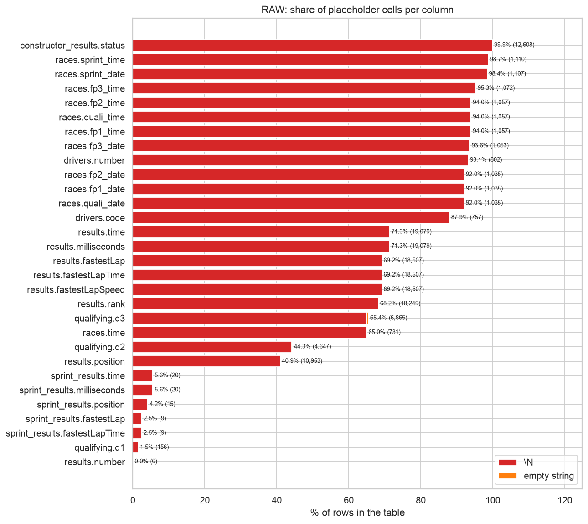
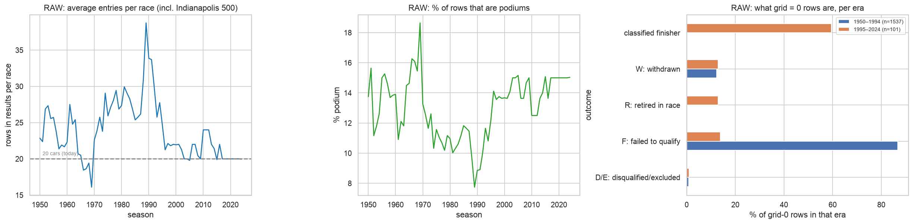
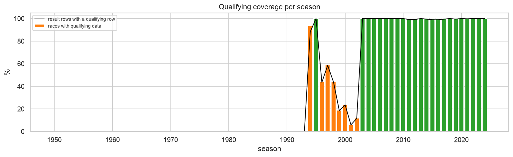
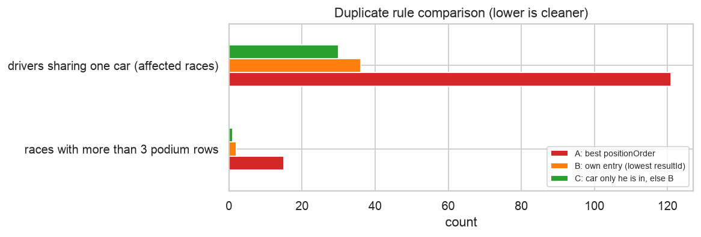
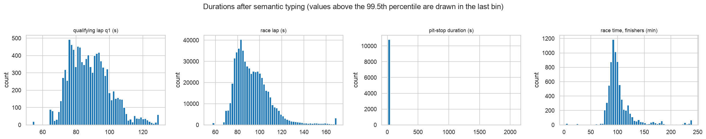
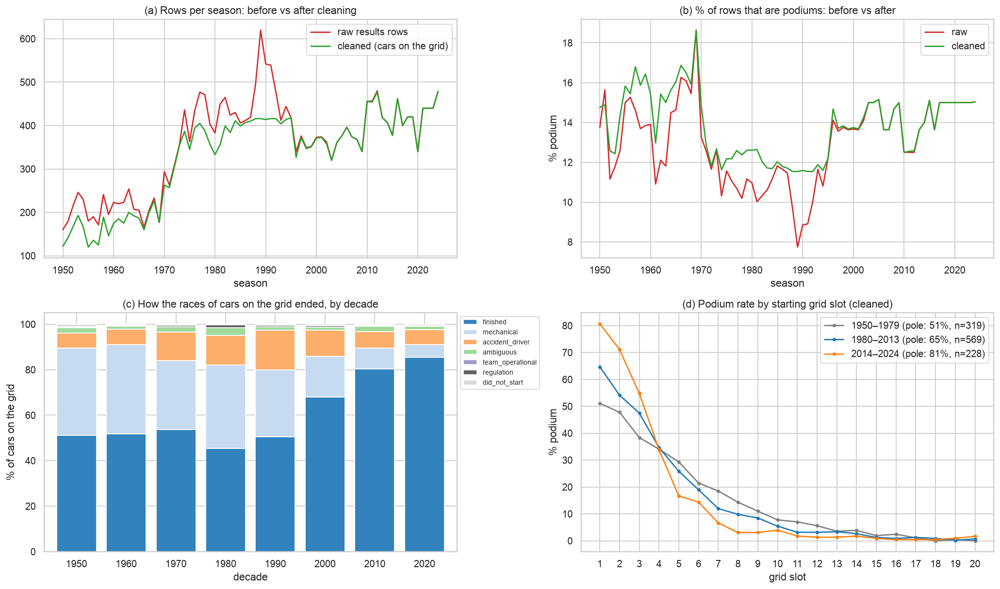
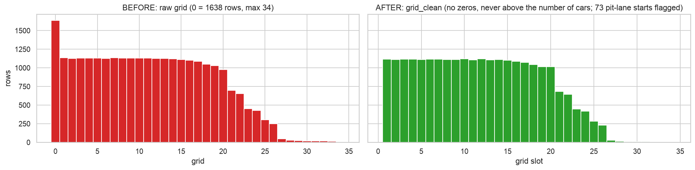
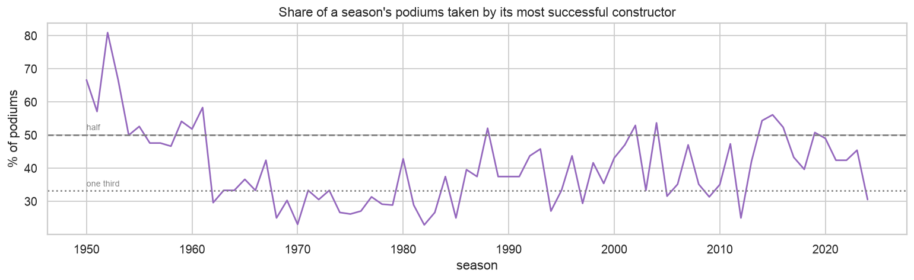
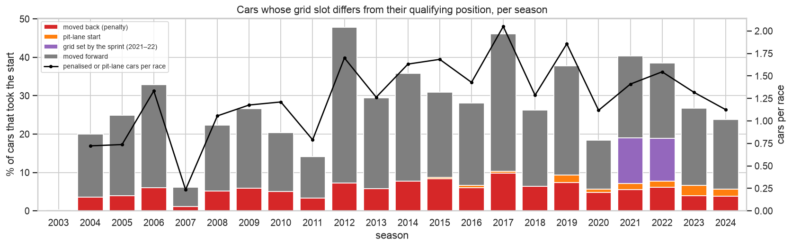

The data is spread over 14 linked tables. One row of the modeling table is one driver entering one race, and the target is podium = positionOrder ≤ 3. The prediction is made after qualifying and before the start. Anything produced by the race itself is leakage: finishing position, points, laps, status, pit stops, lap times, and the standings published after that race.
| table | rows | use for race R | table | rows | use for race R |
|---|---|---|---|---|---|
| lap_times | 589,081 | post-race (not used) | races | 1,125 | pre-race (year, round, date, circuit) |
| driver_standings | 34,863 | previous race only | drivers | 861 | pre-race (date of birth, nationality) |
| results | 26,759 | grid only; the rest is the target or post-race | sprint_results | 360 | pre-race, but not used (D12) |
| constructor_standings | 13,391 | previous race only | constructors | 212 | lookup |
| constructor_results | 12,625 | not used | status | 139 | post-race (Q3 only) |
| pit_stops | 11,371 | post-race (not used) | circuits | 77 | pre-race (country) |
| qualifying | 10,494 | pre-race (position, Q1 time) | seasons | 75 | lookup |
Table 1.1 The 14 tables and whether the current race's values may be used as features.
All files are first read as plain text, so the audit sees them exactly as written, with no type guessing and no silent NaN conversion. The raw files are never modified: an MD5 fingerprint of each file is taken at the start and checked after cleaning, and all 14 are byte-for-byte unchanged (D1). An assertion also checks the dataset version (last season 2024).
Sentinel values. Missing values are written as the literal text \N. Pandas reading the text sees 0 missing values, so every one of them is hidden. Placeholders appear in 30 columns of 6 tables, and 68 cells are empty strings (all in qualifying.q2/q3), which mean the same thing. The missing values are structural:
q2/q3 are missing for drivers knocked out earlier.
\N red, empty string orange) per column.How the data changes over 75 seasons. Early races had far more entries than today's 20 cars: up to almost 40 rows per race around 1989, with failed qualifiers included. As a result, only about 8–12% of rows are podiums in the busy eras, against about 15% today. A raw grid = 0 means two different things (Table 1.2): before 1995 it is almost always a driver who never got onto the grid, while from 1995 it is mostly a pit-lane start.

grid = 0 rows are, per era.| outcome of a raw grid-0 row | 1950–1994 | 1995–2024 |
|---|---|---|
| F: failed to qualify | 1,334 | 14 |
| W: withdrawn | 190 | 13 |
| D/E: disqualified or excluded | 12 | 1 |
| R: retired in the race | 1 | 13 |
| classified finisher | 0 | 60 |
Table 1.2 The 1,638 raw rows with grid = 0. A grid 0 is a pit-lane start only for drivers who actually raced, which decides D6 and D7.
Qualifying coverage drift. qualifying.csv is empty before 1994. It covers 94% of races in 1994 and all of 1995, only 6–59% of races in 1996–2002, and every race from 2003. From 2003, at least 98.9% of result rows in every season have a qualifying row. So qualifying features are missing by design for most rows before 2003, and for those seasons the grid is the only record of the starting order.

Inconsistent text values were found by code checks, not by eye:
"Argentinian " has a trailing space, and is the same nationality as "Argentine";"United States" and as "USA";"Lotus-Pratt & Whitney").Left alone, the first two would split one country into two groups in Q2. Dual or historical nationalities ("American-Italian", "East German") are real values, not errors. Dates and durations stored as text were also listed: dates; lap times such as 1:27.452; the results time column, which mixes the winner's total time with gaps such as +5.478; pit-stop durations; and times of day.
| step | what was done | result / check | decision |
|---|---|---|---|
| Sentinels → missing | Every file re-read with \N and "" as missing; keep_default_na=False so real text such as "NA" is kept | Cell-by-cell check: NaN ⇔ placeholder; 0 cells disagree (asserted) | — |
| Semantic typing | Dates → datetime; lap, qualifying and fastest-lap times → seconds; pit durations → seconds; race times from milliseconds; rank = 0 → missing | 8 conversions, 0 parse failures (asserted); parsed lap times match the milliseconds column | — |
| Plausibility rule | A race time below laps × 30 s is impossible | 18 rows (2024 Belgian GP, where the column holds gaps) set to missing | — |
| Text normalisation | Trailing spaces, "Argentinian" → "Argentine", "United States" → "USA", HTML codes unescaped | Nationalities 43 → 42, countries 35 → 34 | D2 |
| Primary and foreign keys | 14 primary keys, 5 natural join keys, 26 foreign-key links (incl. lap / pit / qualifying rows → a result in that race) | All unique and non-null; 0 orphans in all 26 links; every race has results | — |
| Status categories | Each of the 139 labels mapped explicitly to one of 8 categories (Table 1.4) | Asserted: every label mapped, none twice | D3 |
| Grain: shared drives | 85 (raceId, driverId) pairs (176 rows, 1950–1978); three keep rules compared (Table 1.5) | 26,759 → 26,668 rows; (raceId, driverId) unique (asserted) | D4 |
| Indianapolis 500 | Removed (1950–1960): a separate competition | −381 rows | D5 |
| Cars on the grid at the cutoff | Removed failed qualifiers and entries never on the grid; kept cars that qualified but did not start | −1,365 and −207 rows → 24,715 rows in 1,114 races | D6 |
| Starting position | Grid re-ranked 1 … field size among the kept cars; pit-lane starters to the last slot with a flag | 73 pit-lane starts; 1 ≤ slot ≤ field size (asserted) | D7 |
| Target | podium = positionOrder ≤ 3; positionOrder never used as a feature | Podium rate 13.5%; 1,113 races with 3 podium rows, 1 with 4 | D8 |
Table 1.3 Cleaning steps in order, each with its count and the decision that justifies it (decisions in DECISIONS.md).
Status categories (D3). The brief defines mechanical as "a component of the car failed", which excludes crashes, the driver and regulation decisions. A label is mechanical only if it names a failed component. Damage usually caused by contact or the pit crew (tyres, wheels, wings, debris) is ambiguous, so those labels are treated the same way. "Withdrew" is decided per row in D6.
| category | labels | result rows | examples |
|---|---|---|---|
| finished | 35 | 15,333 | Finished, +1 Lap, Not classified |
| mechanical | 65 | 6,317 | Engine, Gearbox, Hydraulics, Brakes, Power Unit |
| accident_driver | 11 | 2,839 | Accident, Collision, Spun off, Illness |
| did_not_qualify | 3 | 1,365 | Did not qualify, Did not prequalify, 107% Rule |
| ambiguous | 18 | 489 | Retired, Puncture, Wheel, Front wing, Debris |
| withdrawn | 1 | 248 | Withdrew |
| regulation | 3 | 156 | Disqualified, Excluded, Underweight |
| team_operational | 3 | 12 | Wheel nut, Fuel rig, Refuelling |
Table 1.4 The 139 status labels in 8 categories, with how often each occurs in results.
Duplicate drivers in one race (D4). In the 1950s a driver could take over a team-mate's car mid-race, and then has two rows in the same race. At the 1957 British GP, Moss started car #18 from pole and later won in car #20, while Brooks drove #18 until its engine failed, so both drivers appear twice. Three keep rules were compared on two checks a clean table must pass:
| rule | races with > 3 podium rows | drivers sharing one car |
|---|---|---|
A: keep the best positionOrder | 15 | 121 |
B: keep the driver's own entry (lowest resultId) | 2 | 36 |
| C: keep the car only he is recorded in, else B (chosen) | 1 | 30 |
Table 1.5 Duplicate-rule comparison (lower is cleaner). All rules remove the same 67 non-Indy rows; they differ in which row survives.

Rule A credits a shared car's result to both drivers (Moss and Brooks "won" in 1957). It is also outcome-based row selection, which is a form of target leakage. Rule C keeps the car the driver started in, which is the car his pre-race information describes. For example, Ascari in 1951 started 3rd and retired, instead of "started 6th, finished 2nd" in his team-mate's car.
All affected rows are from 1950–1978, inside the training window (D17). Rules A and B differ in 15 podium labels, B and C in one (Ascari, 1951), so C is the rule that keeps those training labels right.
The Indianapolis 500 (D5). It counted for the championship, but of its 107 drivers only 4 ever started another championship race. Its entry lists average 35 per race (55 in 1954), against 22 at other races of that decade. Of its 381 rows, 380 are American drivers racing in the USA, more than three times all other American home starts in 75 seasons. Keeping it would distort field sizes, podium rates and the home-race question; since the model trains from 1950, it would also put 381 oval-race rows into training.
Who is in the table (D6). The prediction is made after qualifying. At that moment, failed qualifiers (1,365 rows) and entries that never reached the grid (207 rows) are already out. Cars that qualified but then failed to start are still on the grid and are kept as non-podiums (137 rows, e.g. Leclerc on pole at Monaco 2021): dropping them would use information from after the cutoff.
Starting position (D7). Left as 0, a pit-lane start would look better than pole. In old seasons the raw grid numbers also have holes and ties (1981 German GP: no slots 19, 20, 24, 25, 27, and the last of 24 starters on grid 28). The grid is therefore re-ranked among the cars on the grid, and pit-lane starters go to the last slot with their own flag.

| rows | duplicate (race, driver) rows | grid = 0 rows | slot > number of cars | podium rate | races | |
|---|---|---|---|---|---|---|
| raw | 26,759 | 91 | 1,638 | 13 | 12.69% | 1,125 |
| cleaned | 24,715 | 0 | 0 | 0 | 13.53% | 1,114 |
Table 1.6 The modeling grain before and after cleaning.


grid, with a spike of 1,638 zeros) and after the re-ranking (no zeros, never behind the last car).
